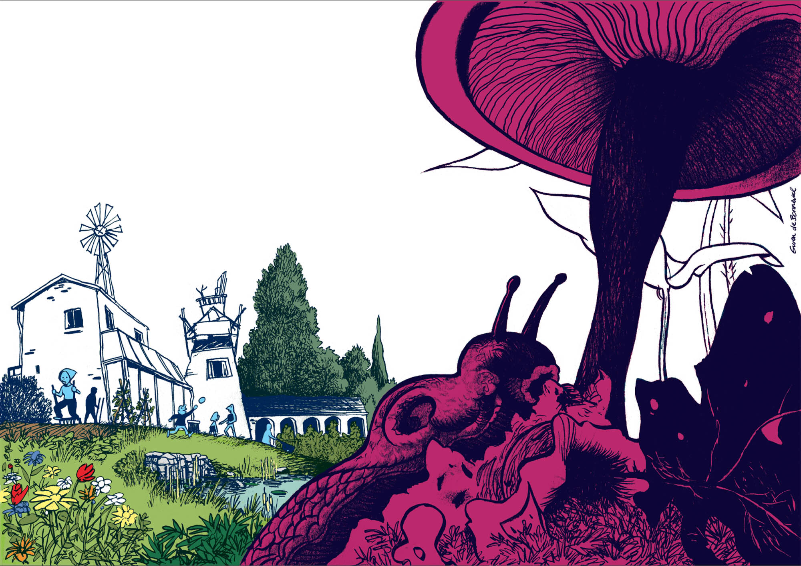

— Et si tu m’expliquais comment vous êtes arrivés ici ?
— On a acheté cette ruine avec 5 hectares de forêt.
— C’est étonnant, ce mélange de ruine et de construction moderne.
— C’est un ancien moulin banal. Il ne restait que trois murs. Avant la Révolution, il appartenait à un seigneur et les habitants du territoire payaient un ban pour faire moudre leur grain. On a voulu garder toutes les caractéristiques du bâtiment, notamment tout ce qui concerne les moyens de production. Remettre le barrage en état nous a permis d’installer une turbine au sous-sol pour produire notre électricité, et aussi de réhabiliter la zone humide. On a vu la faune et la flore se réimplanter.
— Et la partie moderne ?
— On a dessiné une boîte gigogne qui s’insère dans la ruine. On a utilisé le bois de la forêt alentour.
— C’est possible, ça ?
— On nous a présenté un compagnon charpentier qui abat les arbres, les débarde avec un cheval et les transforme en planches, en poutres. Il a construit la structure. Après on a fermé avec des baies vitrées au sud et des cloisons isolantes adaptées au climat, chaud en été, froid et humide en hiver.
— En quelle matière ?
— En briques de terre crue. C’est traditionnel par ici. Pour l’isolation extérieure, on a installé une couche de liège.
— Vous avez mis du liège sur la terre crue ?
— On a tenté le mariage du liège et de la terre crue. Ça marche plutôt bien.
— Mais pourquoi pas garder l’extérieur en terre crue ?
— En hiver, la vallée est humide. Il fallait protéger la terre crue de l’humidité. D’où le liège et les débords de toit. La terre crue amène de la fraîcheur à l’intérieur, en été.
— Vous faites comment pour l’eau ?
— On a fait venir un sourcier. Il a détecté une source. On récupère les eaux de pluie aussi. Surtout pour arroser le jardin.
— Vous avez financé votre projet comment ?
— On a fait un emprunt. Ça a permis d’acheter la ruine et de construire à l’intérieur la maison de 50 m². Quand on a été sûrs de vouloir s’installer ici, on a quitté notre appartement à Toulouse.
— Vous faisiez quoi à Toulouse ?
— Secrétaire juridique et comédien.
— Vous me parlez du jardin ?
— On a fait des recherches aux archives départementales qui ont montré la présence de cultures en terrasses près du ruisseau, donc a décidé d’y planter le jardin. On a créé un potager partagé. C’est beaucoup de travail, mais on est contents du résultat. Plus récemment, on a retapé la grange et restauré le four à pain. La grange ne sert que l’été, en gîte d’étape et en buvette.
— Vous vivez de quoi aujourd’hui ?
— On a beaucoup moins de besoins qu’avant. Le jardin nous nourrit et on vend sur les marchés. L’été, on organise des événements culturels. Concerts, petites expos… On vend les pizzas qu’on cuit dans notre four à pain. Et comme on est restés dans la région toulousaine, j’ai pu continuer le théâtre. J’ai toujours bossé dans le coin. J’anime deux ateliers par semaine. Je travaille avec des lycéens en option théâtre et j’ai monté un atelier amateur ici, au village. De temps en temps, je suis engagé dans une production. Je joue.
Gwenaël de Bonneval est dessinateur et scénariste de bande dessinée. Ses derniers ouvrages parus sont Polaris, ou la Nuit de Circé, et Le Dernier Atlas.
GwenaelDeBonneval.jpeg
Denis_Lachaud.jpeg
Denis Lachaud, écrivain, metteur en scène, est l’auteur de romans et pièces de théâtre publiées chez Actes Sud, et membre du collectif La Forge.